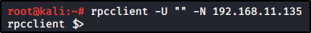

https://www.blackhillsinfosec.com/password-spraying-other-fun-with-rpcclient/
If SMB Null sessions is allowed (E.G. login with no password prompt)
You can try to login with RPC Client and no user

Once logged, you can enum users, groups etc:


Query for Group Information and Group Membership:

Query for a specified user:

Obtain Password Policy info for the Domain or of a determinated User:
(You need to know that before bruteforcing/password spraying)
You can have the same results with "net accounts /DOMAIN"